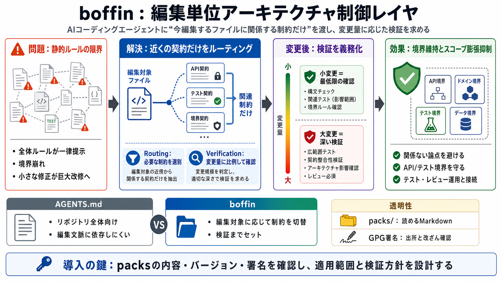

The Rise and Rise of FastAPI
FastAPI has rapidly become the #1 most-starred backend framework on GitHub, surpassing not only Python giants Flask and …

AIコーディングエージェントに「いま編集するファイルに関係する制約だけ」を渡し、編集後は変更量に応じて検証を求める仕組みです。
AGENTS.md のような全体ルールは、一律に提示されるだけで終わりがちです。
その結果、エージェントが境界を崩したり「小さな修正」を巨大改修に膨らませるリスクが残ります。
boffin は「編集対象の近くにある契約（制約）」だけをその場にルーティングします。
さらに“直した後”に、どこまで確認すべきかを変更量に比例させて要求します。
ParselFire Core の考え方として、(1) 当該ファイル向け制約を選別し、(2) 編集結果の検証を変更規模に応じて必須化します。
関係ない論点まで処理対象にしないことで、過剰な改修（スコープ膨張）を抑える狙いがあります。
ルール提示だけでなく、「編集後にどの程度確認すべきか」を変更規模に応じて求めます。
導入時にブラックボックスな指示を差し込むのではなく、packs/ 配下にバージョン付きでマークダウンとして存在し、GPG署名で管理されると説明されています。
公開されているケーススタディでは、テスト通過や API 境界の維持などで成功が報告されています（ただし A/B ベンチではない旨の注意あり）。
AGENTS.md はリポジトリ全体向けの静的指示になりやすい一方、boffin は編集対象に応じて制約を切り替え、検証までセットで要求します。
boffin の位置づけを誤らないための要点を短く整理します。
編集前に制約を明示し、編集後に確認を要求する流れは合理的で、品質・安全のガバナンス層になり得ます。
packs を確認し、どの編集にどれだけ制約が効くかを理解したうえで、外部のテスト/レビュー運用とセットで考えるのが前提です。
使うホスト（Cursor / Claude Code / Codex / OpenCode）、言語、テストの有無、事故りやすい変更種を教えてくれれば、boffin を“効きやすい形”に整理します。 （Japanese: 適用設計）
FastAPI has rapidly become the #1 most-starred backend framework on GitHub, surpassing not only Python giants Flask and …
# Building an IoT Platform Using Modern Data Stack — Part 1 (DuckDB + Prefect). Building a platform from scratch is hard…
You signed in with another tab or window. You switched accounts on another tab or window. Accelerate DuckDB with 10,000 …
This is the first video of a six-video series about FireFly, giving an overview of the four main pieces of a FireFly Nod…
Get a comprehensive understanding of the architecture of Apache Pulsar. This is documentation for the next unreleased ve…